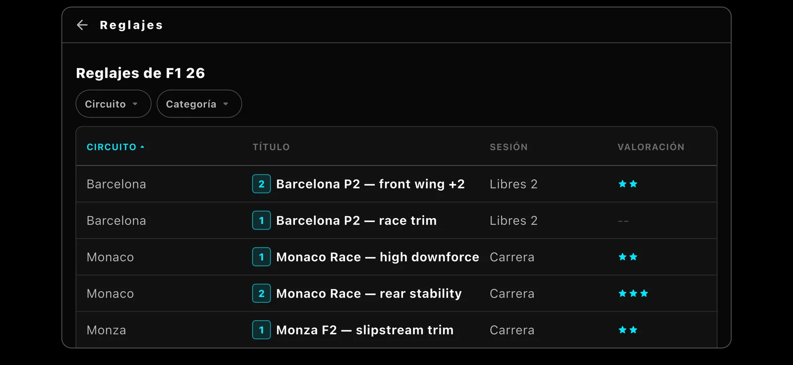
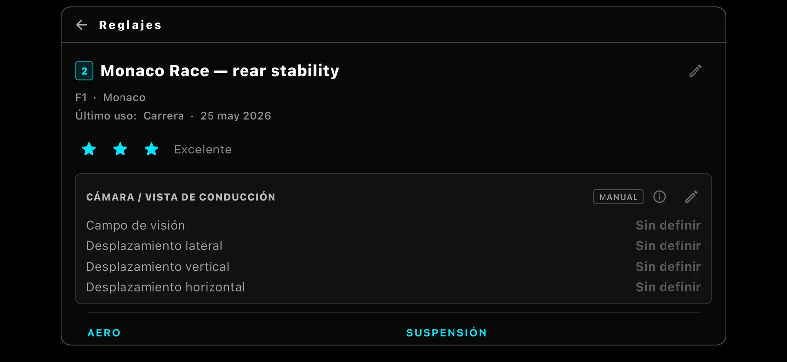

Gratis
- Todos los reglajes que has usado, en la lista por juego y después por circuito, nombre, valoración y sesión
- Cada reglaje nuevo se guarda con su sesión
Cómo funciona
JMD captura tus reglajes automáticamente. Valóralos, ponles nombre y encuentra el adecuado cuando lo necesites.
Nunca escribes un reglaje. JMD registra el reglaje que usas en cada sesión y con ellos crea tu biblioteca. Ábrela desde la pantalla de inicio con Ver reglajes, desde la pestaña SETUP del muro de boxes o desde la sección de reglajes de Preparar sesión.

La biblioteca muestra un juego cada vez, bajo un título como Reglajes de F1 26, para que nunca cargues por error un reglaje de un juego anterior. Si tienes reglajes de más de un juego, aparece un selector de juego encima del título. La tabla muestra circuito, título y valoración, y también la sesión en horizontal. Se abre ordenada por circuito; toca una cabecera de columna para ordenar por ella y vuelve a tocarla para invertir el orden. Los filtros acotan la lista por circuito y categoría (F1 o F2).
La valoración y el nombre pertenecen al reglaje, no a una sola sesión. Valóralo en el historial y la biblioteca muestra las mismas estrellas, y al revés. En la biblioteca, toca la cabecera VALORACIÓN para poner primero tus mejores reglajes.

En la pantalla de un reglaje puedes renombrarlo y ver cuántas sesiones lo usaron y cuándo se usó por última vez. Una sección CÁMARA / VISTA DE CONDUCCIÓN, marcada MANUAL, te permite anotar tu campo de visión y los desplazamientos de cámara. El juego no envía esos valores, así que los escribes tú.